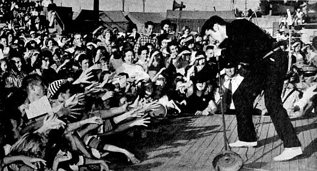

Types of Microphones
On this page there is a section on vocabulary that describes and defines the parts
of a microphone. Having a clear vocabulary helps explain how one microphone differs
from another, and that in turn helps one understand at a fundamental level which
microphone might work better than another in a particular situation. Following
that are three qualities of a microphone that represent a tradeoff. These are the
degree of audio fidelity, the degree of directionality, and the degree of miniaturization.
Generally, you can optimize one of those qualities, but at the the expense of the
others. Finally, there is a discussion of the underlying technology of the
microphone. There are four technologies that one might encounter in house-of-worship
applications. They are the dynamic, the condenser, the ribbon microphone, and the
piezoelectric or crystal technology.
This discussion of microphones is written with house-of-worship applications in
mind. There are many other discussions of types of microphones that have greater
generality. Wikipedia's article on microphones is one example.
Vocabulary
Capsule
All microphones depend on some sort of analog
transducer that converts
the acoustic energy of sound waves into an electrical signal. More often in the
professional audio industry the transducer is called a capsule. But it may
sometimes be called a cap or a cartridge or a microphone element.
It will usually be called a capsule for these web pages. The capsule needs
to be mechanically protected so that the microphone can be handled without damaging
the capsule, and so that the capsule can be properly exposed to sound but screened
from wind and handling noise. This page is all about these capsules and the mechanical
housing and associated parts around the capsule.
Some capsules create more powerful electrical signals than others. Some capsules
create signals strong enough to directly pass through hundreds of feet of microphone
wire before they need any amplification. The most powerful capsules create so-called
microphone-level signals. These are voltage signals of about –40 dBV
down to about –60 dBV. (About 1 to 10 mV peak) That's not really very
strong! Other capsules create even weaker signals. They require a pre-amplifier to
be located adjacent to the capsule (inside the microphone) or within a few feet of
the capsule, say in a bodypack. There a pre-amplifier strengthens the signal to an
optimal level for sending down a cable or for wireless transmission. The pre-amplifier
in or near the microphone creates a so-called "line-level" signal that is even stronger
than a microphone-level signal. Line-level signals are in the range of about +1.8 dBV
down to about –10 dBV, with 0 dBV as nominal. (1228 mV down to 316 mV peak
with 1000 mV as nominal)
It is a little ironic that by the time the signal gets to the mixer board, the capsules
that generate the strongest signals ("mic level") provide the board with the weakest
signals ("mic level") due the absence of a pre-amplifier ahead of the mixer board.
But there is a minor advantage in the absence of a preamplifier. Each amplifier or
preamplifier in the pathway of the signal needs to be properly gain
structured. Improper gain structure causes noise or distortion. Capsules that
require no preamplification—mic-level capsules—avoid a potential gain
structure problem. Sometimes mic level capsules are preferred solely for this advantage.
Capsules that require a pre-amplifier must be properly gain structured. Some preamplifiers
have a switch or knob that can be adjusted to adapt the pre-amplifier to the audio loudness
the capsule is exposed to. Since gain structure is even more critical if a wireless
channel is employed, almost all wireless microphones have gain trim adjustments, which
may be hidden behind a battery door or deep on a menu. Most capsules that require a
preamplifier and are intended to be used in a wired channel have a factory-preset
gain trim which is not adjustable. If the audio loudness is too loud or too soft to
adequately match this pre-set gain trim setting, one has no other choice except to
substitute a different microphone type (different brand or model) that is a better
match to the situation.
Some microphones are available with a selection of different capsules that may be mounted
in or on them. Other microphones include two or more capsules with a switch to select
how the capsules are connected to the electrical output of the microphone. (The "Blue"
brand of microphones has made a sort of specialty of selling microphones with multiple
capsules. The "Blue Yeti" microphone and its variants have multiple capsules built in
and selectable by a switch. The "Blue Bottle" has a selection of optional capsules
than can be attached to the main housing of the microphone. But Blue is not the first
or only company to provide such offerings.) Even if a microphone has only one available
capsule, the capsule is usually a replaceable part if the microphone is carefully
disassembled.
Shock Mount
Most capsules are suspended inside a housing via a shock mount. Sometimes the
shock mount and the capsule are a single indivisible assembly. A shock mount is usually a rubber
assembly with some damping, arranged so that mechanical vibrations from handling
the microphone do not get mechanically coupled into the capsule and mixed with the audio.
Shock mounts can have varying degrees of sophistication or, in the case of inexpensive
microphones, might be rather ineffective or even entirely absent, with the capsule
mechanically fastened directly into the microphone housing.
Windscreen
It is desirable that only sound gets to the capsule, no wind or breath noise. There are
three types of wind-sounds to consider.
1) The ordinary breeze of the day, such as is reported in the weather forecast, needs to
be considered if the microphone is used outdoors. This breeze can cause turbulent air
flow over the capsule, which will create an obnoxious rustling sound. Almost certainly
the microphone's built-in windscreening will need to be supplemented.
2) There is also wind caused by the motion of the microphone. Suppose a microphone is
handheld and the vocalist is not singing, holding the microphone near a thigh in a
relaxed manner. Then the vocalist raises the microphone to sing. This type of motion
is equivalent to a breeze of about 10 to 15 MPH. If the vocalist is dancing or acting
in a theatrical manner this type of breeze can be even greater.
3) There are plosive sounds in
speech and singing. These produce puffs of air that are expelled from the vocalist's mouth but are usually inaudible
in daily life—until a microphone picks them up and emphasizes them. Most
microphones, if they are in just the wrong position, become sensitive to these plosives,
distorting the sound. The area of maximum plosive turbulence is usually about three inches
straight out from the mouth and a half-inch down. Hold the capsule of the microphone
almost anywhere else for a better sound! To mitigate these three sources of wind noise,
most microphones include some windscreening.
Because windscreening can muffle the sound, as if you are listening through a pillow,
windscreening built into a microphone is usually kept to a minimum. Ideally, vocalists
should be trained to avoid putting the microphone in the stream of plosives.
Only enough windscreening is usually provided for use outside the stream of plosives.
Optional external windscreens, often in the form of foam socks that cover the microphone,
sometimes in the form of a mesh disk suspended between the vocalist and the microphone,
can be used to add additional windscreening if desired.
Microphone
For the purpose of this tutorial, a microphone is the assembly of hardware that
consists of the capsule and, if necessary, the pre-amplifier, and the shock mounting,
and the housing around that and the windscreening to ideally allow only sound to reach
the capsule. A microphone might also contain various switches (e.g. on/off).
There will be a separate page in this tutorial on the electrical connection between
the microphone and the mixer board or wireless transmitter or PA amplifier. There
will also be a separate page on handling and using microphones.

Above: A view of the inside of a typical studio microphone.
(AKG model C414 XLS )
Click on the photo for a higher resolution view.
Photo ©2018 by AKG.com, used with permission.
Three qualities that get traded-off
There are three characteristics of microphones that get traded-off. These are:
Above: A visualization of the placement of a microphone in a 3-D space based on
its characteristics.
Any given microphone can be visualized as occupying a place in a three-dimensional
space. As any one of the above gets optimized, it tends to come at the expense of one or
both of the other qualities listed above. For example, if you accept a very large microphone
(zero effort at miniaturization) that is sensitive to sound from all directions (no
directionality), then you can have very high audio fidelity. Or maybe you want a
very directional microphone. You can expect that to be a large and low fidelity
microphone.
As effort is taken to optimize one of these three characteristics, and as the other
characteristics are traded away, the location of the microphone in this classification
system tends to move toward one of the two planes containing the axis being optimized,
or even near the axis itself. Down through the decades microphone designs have gotten
better and there are more options located far from the origin and away from the three planes
of optimization.
1.) Degree of miniaturization.
Actually, this category is more than just about physical size. It is also about
how the microphone can be handled and positioned. In the 1920's microphones were
large conical horns connected to metal pipes to route the acoustic energy to a
diaphragm mounted on a lathe to cut a recording directly with the acoustic energy
collected. It was anything but convenient to use one of these microphones.
Above: Two examples of early acoustic-powered microphones,
circa 1925. (click an image for a larger view)
One fact remains to this day. The essential problem with
miniaturization of a microphone is the declining amount of acoustic energy that can be
collected for conversion. In a studio environment larger and more awkward arrangements
can be accepted. In live-sound reinforcement miniaturization is especially valuable, and
other qualities can be sacrificed. With this type of trade-off in mind, the degree of
miniaturization needed will also be influenced by how the microphone needs to appear
(or disappear) or be mounted in the room. If a microphone is going to be hand-held,
it should not be too small! The degree of miniaturization needed is
influenced by the overall characteristics of the situation. A studio microphone is located in or near the directionality—audio-fidelity
plane. Miniaturization is not needed and normally not much achieved.
A microphone used in a recording studio can require complicated set-up, a controlled
environment (temperature, humidity) and mechanical delicacy. It will be attended to
by a recording engineer, and used by experienced performers, so careful
handling and adroit positioning can be assumed. Windscreens and mechanical
shock-mounting can be dealt with separately from the microphone itself to
assure the best possible results in a variety of situations. Some microphones are designed to be mounted on a stand. They
usually include good mechanical shock-mounting and a wind screen in
one unit to reach for studio-quality with less fuss and set-up time.
A common design to achieve this is the birdcage style. Here
the capsule, shock-mount, and windscreen are protected inside a cage.
The Shure model 55SH is a common example, but many manufacturers make
microphones in this style. These microphones are simply too big to
be conveniently hand-held, so they must be used on a stand. The stand
also allows the sound engineer to position and aim the microphone
carefully, which is an advantage, unless the vocalist starts tipping
the stand around, Elvis-style! A good-quality microphone that is designed to be hand-held but
instead is clipped to a stand can be every bit as useful as a microphone
designed to be mounted on a stand. The main advantage of mounting a
microphone on a stand is that it can be pointed away from loudspeakers
and toward the sound source in a dependable way. A microphone that is
held by a person is likely to be pointed all around the room at various
times. 
Installed microphone
Some microphones are permanently fastened to a podium, a desk, or
at a cash register or a bank's drive-up window, or similar location.
Installed microphones used to be preferred (1930's through 1970's) in
house-of-worship applications in order to minimize set-up and take-down
time. In some of these situations the public address system was simply
turned on or turned off. There was no sound operator on duty during worship.
Most houses of worship have now abandoned that concept and many installed
microphones have been removed and replaced with other options. Those
installed microphones that remain might be used only as backup options
or otherwise abandoned. Installed microphones are designed to be always present and ready, requiring
no set-up time and no training to use. They are impossible to misplace
or disconnect because they are bolted down and more-or-less permanently
wired in place. They must be rugged enough to withstand use by ordinary
people, in contrast to microphones used by professional performers.
Installed microphones need good mechanical shock mounting to prevent
noises from the podium or counter-top on which the microphone is placed
from being conducted into the microphone. Installed microphones are usually designed for spoken-word applications
as opposed to music. This usually implies prominent sensitivity
to upper-midrange frequencies where the human voice has a lot of energy.
This makes spoken words easier to understand as compared to uniform
frequency response, even if it is not particularly high-fidelity.
Sometimes, especially in house-of-worship applications, a soloist or
small ensemble of vocalists will perform from a podium with an installed
microphone. If the microphone is not one designed for music, the
results can be a bit on the shrill side. The category of installed microphones also includes microphones that
are suspended from a ceiling to pick up sound in a conference room,
or from a choir, or congregational singing, etc. These microphones do
not need shock mounting, but usually their size should be minimal to
avoid obstructing sight lines in the room. Very often these microphones
have a captive cable, meaning a long cable (say 15 or 20 feet) that is
permanently attached to the microphone. The cable that conducts the
electrical signal is also designed to have the mechanical strength
to suspend the microphone while being as thin as possible for aesthetic
reasons. The category of installed microphones also includes microphones built
into other appliances, such as a laptop computer, cell phone, intercom
system, etc. Once again, quality shock mounting matters. For instance,
on a laptop computer the microphone should not be able to pick up the
sound of the keyboard being used. (But that's a pretty tall order.) Or
the microphone might be built into a helmet or headphone.
Sometimes a microphone that is designed as a hand-held microphone is
clipped to a gooseneck that is permanently fastened to a podium or table-top.
Functionally, this usually works fine, assuming the microphone has a good
internal shock-mount. It can even have superior performance since some
hand-held microphones are higher fidelity than some microphones that are
designed to be installed. Practically however, the microphone can be
easily removed from the clip and disconnected from the cable. Even if
potential theft is not an issue, the microphone might be absent without
leave when it is needed because someone temporarily borrowed it for another
purpose. Also, in this type of installation the microphone
cable is usually visible and subject to additional wear and potential abuse,
as opposed to a cable that is internal to the gooseneck.
Handheld microphones need to be conveniently held; hence the typical
size is about that of an ice-cream cone. Some of them are designed in a
stylish way for use on camera in television work. The size of these
stylish microphones has little to do with basic physics and electronics
and more to do with fashion. A few are more stem-like to appear more
stylish on camera in some situations. There is a small market in
customizing handheld microphones so that they coordinate with clothing,
sets, etc. An inexpensive customization is to fit it with a colorful
windsock. Most voices sound better, with less popping and hissing, if an additional
wind sock is fitted over top of the standard screen on the microphone.
Video: How to hold a microphone.
The person holding the microphone should be instructed to hold it by the
handle and not allow any fingers to touch the wind screen. Fingers and
hands near the capsule block sound. It is counter-intuitive to most people,
but cupping the microphone blocks sound from traveling clear through the
windscreen system, thus creating distortion in the sound. You don't speak through
your nose but pinching off your nose while talking creates an unpleasant
sound! Similarly, blocking the back of a microphone creates a bad sound.
That said, some singers still like to cup the microphone. It can be done
in a way that accentuates mid-pitched sounds, making the vocalist seem
closer to the listener, but usually at great compromise to overall fidelity.
In this video the
speaker is incorrectly holding the microphone from
0:30 to 2:10. At 2:10 he moves his hand and corrects his hold on the
microphone. The improvement in the audio is easily heard if you are
listening with a decent sound system or good headphones. (A tiny smart-phone
speaker might not show difference.) This example is just speech. The
difference with vocal music can be even more obvious, but this is the
example I was able to find. (Just watch from about 1:00 to about 3:00.
This author does not particularly endorse lock-picking! Do you know of
a better example video? Please e-mail me!)
Hand-held microphones fully occupy one hand of the vocalist which
reduces the ability of the vocalist to gesture or manipulate papers. A
vocalist might reflexively gesture or manipulate notes with the hand
that is holding the microphone, resulting in inconsistent sound. Although
most hand-held microphones are directional, the sound operator cannot
depend on this directionality being used to advantage. Unless the person
using the microphone understands well how to use it, the aim of the
microphone can be best controlled by fastening the microphone to a
stand using a microphone clip. This frees the vocalist's
hands and gives the sound engineer an opportunity to aim the microphone
carefully to minimize the pickup of feedback and other undesired sources
and maximize the pickup of the desired source. A handheld microphone is likely to be dropped onto hard floors
now and then. It must be able to survive this. Handheld microphones also
need to have the capsule mechanically-shock-mounted so that handling noise
(picking up and setting down the microphone, handing the microphone from
one person to another, sound from stroking the microphone wire) is minimized.
A handheld microphone usually needs a substantial
wind screen to mitigate the sound of the wind going past the microphone
as it is waved through the air. (For example when a singer lifts the
microphone from near waist height to their mouth to begin singing, the
breeze going past the capsule would be substantial save for the windscreen.)
Windscreens having larger and softer and shaggier surfaces are
more effective. In thinking about where this type of microphone would be in the 3-D space
of miniaturization-directionality-fidelity, the miniaturization is becoming
extreme enough to cause noticeable compromises. This is located quite far from the
origin of the 3-D space but also quite near the miniaturization axis. Lavalier microphones usually compromise the shock mounting and are made
omnidirectional to make the microphone smaller. Directional lavalier microphones
are available; however they are larger and harder to hide in clothing or hair.
If there is a windscreen, it is likely to be only slightly effective due to its
small size. Lavalier microphones are usually clipped to clothing. For live-sound applications (Most house-of-worship applications) the microphone works best
when mounted near the place on the chest where the person's chin touches if the
head is lowered until the chin touches the chest. This is about three inches
higher than the best place for recorded sound work. The place where the chin can
touch gives a stronger signal that is less prone to feedback and needless echo.
In recorded work there is no amplified sound to overcome, so a slightly lower
position can be used to achieve a somewhat more natural tone. Mounting the
microphone too low also increases the risk of stomach rumble being picked up!
No matter how the microphone is mounted, if the speaker turns his or her head
far to either side, the sound level tends to drop. (If you are reading other
literature on the topic of placing a lavalier microphone, pay attention to the
application. Is it live-sound, recorded sound with no video, or video with
audio? Each requires a different optimization.) Lavalier microphones are designed to be mounted to a soft sound-absorbing surface
such as clothing, or even skin (use medical first-aid tape). The sound this close
to such a surface will naturally be a little muffled. To combat this, all lavalier
microphones are designed to boost the higher frequencies so that the
sound they send is normal-sounding. The high-frequency boost is usually created
by the acoustic properties of the capsule's materials, as opposed to using an
electronic filtering circuit. An acoustic boost of high frequencies does not also
boost electronic noise like an electronic filter does. Thus, using a hand-held
microphone on a necklace and using an equalizer to achieve the needed high-frequency
boost, does not perform as well as using a lavalier microphone in the first place. A lavalier microphone with it's built-in acoustic high-frequency boost is well
and good as long as the microphone is used as intended. Occasionally a speaker
will, in an impromptu moment, remove his or her lavalier microphone and hand-hold
it to pick up a guest speaker standing nearby. This always results in a
tinny sound due to the built-in high-frequency emphasis. Also, the microphone
typically has no shock mounting and no wind screen (or only a slightly effective
wind screen). Thus, the results of hand-holding a lavalier microphone are
inevitably poor, with lots of rustling noises, popping sounds, and shrillness. If
the need to offer a microphone to a guest can be anticipated, it would be best to
offer the guest another microphone of any type rather than hand-holding a lavalier
microphone. Also, due to the built in high-frequency sensitivity, a lavalier
microphone is a poor choice for a musical instrument (guitar, violin, etc.). In a house-of-worship application the main advantage of a lavalier microphone
is the freedom of hands and movement that the microphone affords. Almost any other
microphone type will give better quality sound for the money. That goes
double for a lavalier used on a person who is singing, since audio fidelity
matters more then.
The discussion below starts with the largest present-day microphone styles (little
need for miniaturization) and proceeds toward the smallest microphone styles.
Studio-type microphones
These are the characteristics of a studio-type microphone:
Above: A studio microphone for a vocalist. The microphone is
in a separate
mechanical shock mount with an external wind screen.
Photo: Pixabay
Stand mounted
These are the attributes of a stand-mounted microphone:

Above: A typical "birdcage" style microphone.
(Shure model 55S) Photo:
Wikimedia Commons
Above: Sometimes the microphone stand is a stage prop too!
(Elvis Presley, 1956.) Photo: Wikimedia Commons
These are the characteristics of installed microphones:

Above: An installed microphone. The sound of moving drinking
glasses etc.
on the tabletop can be conducted up the gooseneck, thus
good shock mounting
of the capsule in the microphone is needed.
Photo: Wikimedia Commons
Handheld
These are the characteristics of a handheld microphone:

Above: The parts of a typical hand-held microphone. 1. Handle, 2. Shock-mount,
3. Capsule, 4. Pre-amplifier, 5. Internal windscreen 6. External windscreen.
Click on the photo for a higher resolution view.
Photo ©2018 by AKG.com Used by permission.

Figure 7. Stem-style hand-held microphone. (American model D22.)
Oh yeh, the other subject in this photo is Bing Crosby.
Photo: Ampex advertisement from the 1950's, fair use

Figure 8. This sounds terrible. Hold it by the handle instead.
Sometimes people want to sound terrible, but otherwise,
give them some basic instructions.
Photo: Pixabay
Video: Proximity effect and directionality
Lavalier or Lapel-mounted
These are the characteristics of a lavalier microphone:
Above: A well-placed lapel microphone on George Forman.
Photo: Wikimedia Commons
Head-worn
These are the characteristics of a head-worn microphone (also known as a head-set
or ear-set microphone).
Head-worn microphones are the smallest, most miniaturized microphones used for
live-sound reinforcement. The largest are about a half-inch in diameter (which
may look more like one inch in diameter if fitted with a windscreen) and the
smallest are about the size of a grain of rice. The most desirable ones for
use in most house-of-worship applications are the size of a pea or smaller.
Such small microphones are usually omnidirectional. They also might not have
the best audio fidelity, but for voice reinforcement in a live-sound environment
they are usually an excellent overall compromise. They are placed so close to
the sound source that directionality usually is not needed, and they can be
designed to give good audio fidelity if the design is optimized for the
human voice.
{kind=link}
{kind=link}
{kind=link}
{kind=link}
.jpg){kind=link}

Above: Garth Brooks wears a Crown CM331A head-worn microphone.
Wikimedia Commons
.jpg){kind=link}
One of the primary advantages of a head-worn microphone is that it moves
with the speaker's head and maintains a very constant distance to the source
of the sound. Another advantage is that although the microphone is in plain sight,
the smallest of them are small enough to disappear from view at a distance or on video
if they are worn properly. To this end, most of the small models are available in
a variety of colors to match different skin tones. Also, to the end of allowing
the microphone to disappear from view, the microphone can be worn in such a style
as to allow natural shadow lines along the jaw to camouflage the microphone. To make such
camouflage effective the microphone must lay on or very close to the skin
(within 1/4 inch or less). Otherwise shadows and highlights from ordinary
lighting give the microphone away, even accentuating its visibility.
Sometimes a head-worn microphone is used mainly to fight feedback. If this is
the case, the best place to locate the microphone capsule is about 1/2 inch
back from a smile and in line with the speaker's lips.
Above: George Washington Carver and George Washington are
each wearing a head-worn microphone in the ideal location for
picking up the maximum signal practical, thus giving the
maximum gain possible before feedback sets in.
Wikimedia Commons
and Wikimedia Commons
(both marked up)
{kind=link}
{kind=link}
Usually maximization of gain-before-feedback is not needed. Furthermore, head-worn microphones are typically extremely sensitive to plosives. If the microphone is any closer to the lips than is shown above then distortion of plosives becomes a possibility. Usually, it is best to position the microphone to achieve more camouflage by mounting it more closely aligned with the lower jaw. There is a natural shadow-line on the front of the jaw. If the microphone is located as if to extend this shadow-line all the way back to underneath the earlobe, the eye of the viewer will overlook the microphone. If a shirt is worn with an open collar, be sure the microphone is not so low on the jaw as to possibly rub on the collar. Even at this location, the microphone is just a few inches from the speaker's mouth and a good strong signal is available.


Above: George Washington Carver and George Washington are
each wearing a head-worn microphone in the ideal location to
camouflage it, giving the microphone the least visibility.
Wikimedia Commons
and Wikimedia Commons
(both marked up)
Sometimes the speaker has difficulty getting the microphone to fit well. In this case the mic may hang in mid-air an inch or more from the speaker's face. Distance between the mic and the face causes the microphone to become distractingly visible against the background. Ideally the sound technician should work with the speaker to get the microphone placed well so that the speaker is comfortable with the microphone and does not have to fiddle with it during the worship service and so that the microphone is mounted optimally for the needs of the situation.

Above: George Washington Carver and George Washington have
been given no help from the sound tech. Although this location
for the microphone seems intuitive, it optimizes nothing.
Wikimedia Commons
and Wikimedia Commons
(both marked up)
If you have a choice of colors for the microphone, choosing a color that is
slightly darker than the speaker's face will disguise the microphone better
than choosing a color that is slightly too light. This works best because
the lighting on the podium will typically cause a few spots of glare or
specular reflection from the microphone. A slightly darker color will offset
the glare and give a better overall color match.
Above: Head-worn microphones are often available in a variety of colors.
Product photo, MM-PSM Pro Series, fair use.
{kind=link}
To be continued. . .
Planned for the future on this page:
More on head-worn microphones (fragility, cord dress, interference with jewelry)
2.) Directionality
3.) Audio Fidelity
-Capsule technologies
Planned for the future on another page:
-Techniques for using microphones
Return to HoW Sound homepage